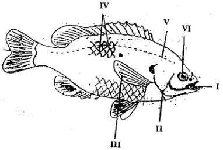

2018 BECE Science Past Questions – Paper Two

(i) Identify the fish
(ii) Name each of the parts labelled I, II, IV, V
(iii) Name the habitat of the fish
(iv) Explain how each of the parts labelled III and VI enables the fish adapt to its habitat.
(b) The diagram below is an illustration of a section through the soil. Study the diagram carefully and answer the questions that follow.
(i) What does the diagram represent?
(ii) Name each of the parts labelled I, II, III, IV
(iii) Which part of the diagram:
(α) is the richest in humus?
(β) is the habitat for soil organisms?
(γ) undergoes weathering?
(iv) What is the effect of heavy rainfall on the part labelled I?
(c) The diagram below is an illustration of an electrical circuit. Study the circuit and answer the questions that follow.

(i) Name each of the parts labelled I, II, IV, VI
(ii) State the energy transformation that takes place in:
(α) I
(β) IV
(iii) State the S.I. units of the quantity measured by each of the parts labelled
(α) III
(β) V
(iv) State the function of the part labelled VI
SECTION B
[45 marks]
(ii) Why is the plant in any food chain referred to as the producer?
(iii) What is the term given to the other organisms that depend directly or indirectly on the producers for food.
(b) The diagram below is an illustration of the picture obtained on a screen when an opaque object is placed in the path of a light source. Study the diagram and answer the questions that follow.

(i) Name each of the shadows that is cast on the screen;
(α)A
(β)B
ii) What does the shadow of the object cast on the screen illustrate?
(c) Describe briefly how a sample of pure sugar could be obtained from a mixture of sugar and sand.
(d) State three ways by which soil can be conserved.
(i) State the name of the energy possessed by the object by reason of its new position.
(ii) Calculate value of this energy. [g=10 ms-2]
(b) (i) What is matter?
(ii) State two of the states of matter.
(c) (i) Describe the nature of loamy soil.
(ii) Name any two plant nutrients.
(d) (i) State one causative organism for each of the following diseases:
(α) cholera
(β) tuberculosis
(ii) State one method of prevention of cholera.
(b) State the dangers involved in each of the following activities in the laboratory:
(i) eating or drinking water in the laboratory.
(ii) Walking barefooted;
(iii) washing hands with unknown liquid in a beaker.
(c) A child is found not to be able to see at night.
(i) what deficiency disease may the child be suffering from?
(ii) what food nutrient is the child lacking?
(iii) State three sources of food substances that can provide the nutrient that child lacks.
(d) (i) What is a force?
(ii) Explain briefly why a driver a could not stop a car on a slippery section of a road when he applied the brake.
(b) State three characteristics of living things.
(c) (i) what us pollution?
(ii) Name one air pollutant.
(d) State three factors which influence vegetable crop production.